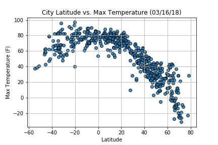

As expected, the weather becomes significantly warmer as one
approaches the equator (0 degree latitude). However, the southern
hemisphere tends to be warmer this time of year than the northern
hemisphere. This may be due to the tilt of the earth at the time
of year when data was gathered. Temperatures drop the further an
area is from the equator due to the curvature of the earth.
Max Temperature
